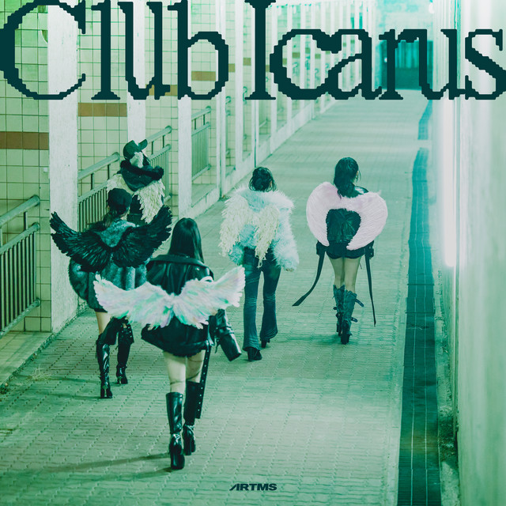
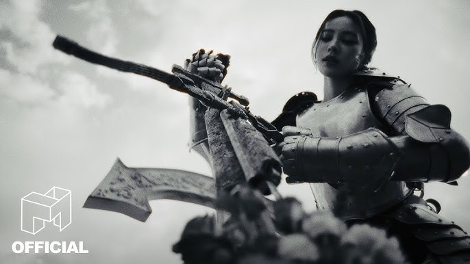
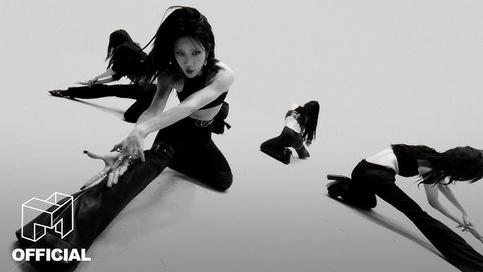

The 1st Mini Album
Club Icarus hovers between reality and surreality.
For those who are hurt and lived but had to spend time crouching alone. I hope you can be comforted by the music of Artms that sounds in the club.
Listen on Spotify Listen on Apple MusicIcarus
The title song hopes that the birds will sprout to those who have been hurt like Icarus myths and hope to help new hopes on the wound. The rhythms and melodies that are slowly stacked in the elaborate piano lines declare that Artms are the most aesthetic group in K-POP.
BURN
The last track is already released as an OMA, and it is now completed as Artms in the girl of the month. Wait for six years. And now it burns everything and spreads new wings.